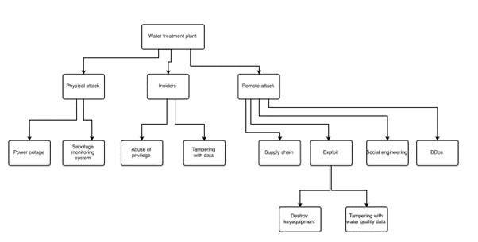
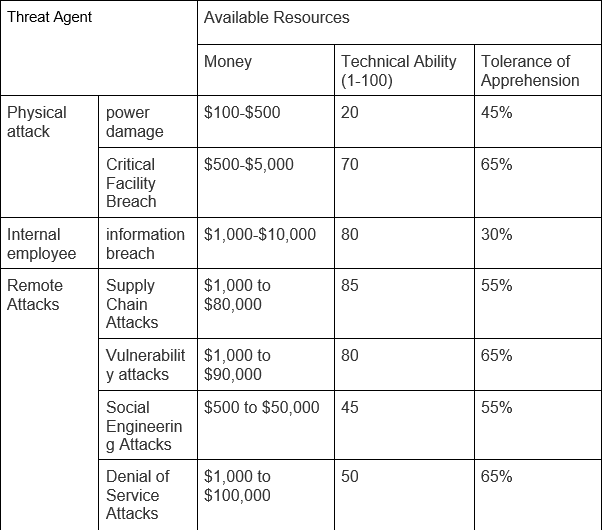

Attack Tree
Step 1: Create an Attack Tree Model
These mainly include: physical attacks, internal staff, remote attacks

Step 2: Identify Probable Attacks using Capability Analysis
Physical attack: power damage ($100-$500, skill:20, apprehension:45%), critical facility damage ($500-$5,000, skill:70, apprehension:65%)
Internal employee: information breach ($1,000-10,000, skill:80, apprehension:30%)
Remote attacks: supply chain attacks ($1000 to $80,000, skill:85, apprehension:55%), breach attacks ($1000 to $90,000, skill:80, apprehension:65%), social engineering attacks ($500 to $50,000, skill:45 , apprehension:55%), denial of service attacks ($1,000 to $100,000, skill:50, apprehension:65%)

Step 3: Evaluate the Impact of Attack Scenarios
Analysis of the above attack scenario in a tap water scenario:
- Power disruption: An attacker may attempt to disrupt the power supply to a water treatment plant, making the water facility inoperable by cutting off power. This could result in interruptions to the water supply or reduced water supply capacity, impacting residents and businesses.
- Critical Facility Sabotage: Attackers may target critical equipment at water treatment facilities, such as pumps, filters, treatment systems, etc. By damaging or disrupting critical facilities, attackers can cause malfunctions or abnormalities in the water treatment process, affecting water quality or the ability to supply water. ($100,000 to millions)
- Internal Employee Information Leakage: There is a risk of information leakage from internal employees who may accidentally or deliberately leak critical tap water treatment plant information, including system configurations, security vulnerabilities, operating procedures, etc. These leaks could be used by malicious individuals to carry out further attacks such as system intrusion or sabotage. (hundreds of thousands to millions)
- Supply Chain Attack: An attacker could cause a virus attack after installing this software by manipulating the water treatment plant's software to be planted before it is shipped. (Hundreds of thousands to millions)
- Vulnerability Attacks: An attacker may exploit vulnerabilities in a water treatment plant or related systems, such as unpatched software vulnerabilities, weak passwords, insecure network configurations, etc. By exploiting these vulnerabilities, an attacker may gain unauthorized access and interfere with or disrupt system functionality. (hundreds of thousands to millions)
- Social Engineering Attacks: Attackers may use social engineering techniques to deceive WTP employees and gain access to sensitive information or access by masquerading as a legitimate entity or using deceptive means. For example, an attacker may gain access to critical information to a water treatment plant through phishing emails, phone scams or by impersonating a visitor. (Hundreds of thousands to millions)
- Denial of Service Attacks: An attacker may attempt to disable the tap water treatment system by launching a denial of service attack. This can be achieved by overloading system resources, flooding network traffic, or other means, causing the system to go down or reducing water supply capacity. (Hundreds of thousands to millions)
Step 4: Determine the Risk Level of Each Attack Scenario
- Electrical Sabotage: High risk level. Disruption to the electricity supply to the water treatment plant would result in serious interruptions to the water supply or reduced capacity, with significant impact on residents and businesses, and could trigger an emergency.
- Damage to Critical Facilities: High risk level. Damage to critical equipment at the water treatment facility would result in a reduction in water supply capacity or even complete interruption of the water supply, with serious implications for the operation of the water system and water quality, and could lead to health and safety issues.
- Internal Employee Information Breach: Medium risk level. Internal staff information leakage could result in sensitive information being exposed to unauthorized personnel, increasing the risk of exploitation of security breaches, but the scope of risk is relatively small and can be managed with appropriate security measures.
- Supply Chain Attacks: High risk level. Supply chain attacks can lead to malicious or tampered equipment, materials, or chemicals entering the water treatment process, causing water quality issues or potential security risks, and require enhanced supply chain management and validation mechanisms.
- Vulnerability Attacks: High risk level. An attack using vulnerabilities in the water treatment system could lead to a breach, data leakage, or system failure, posing a significant threat to the reliability and security of the water supply system.
- Social Engineering Attacks: Medium risk level. Social engineering attacks can lead to information leakage or unauthorized access by tricking staff into obtaining sensitive information or overstepping their access rights, requiring staff education and security awareness.
- Denial of Service Attacks: Medium risk level. A denial of service attack may cause the water treatment system to fail to function properly, resulting in a temporary or long-term impact on water supply capacity, but can generally be resolved through recovery measures and poses a low threat to security.
Step 5: Attack Detection
- Power Disruption: Install monitoring systems to detect power interruptions or abnormal power consumption.
- Critical Facility Breaches: Use video surveillance, intrusion detection systems, and access control measures to monitor and protect critical facilities.
- Information Breach: Implement data access controls and rights management, monitor and audit data access behavior, and conduct staff education and training to raise security awareness.
- Supply Chain Attacks: Review and validate supply chain partners' security practices and processes, and monitor and analyze anomalous behavior and network traffic in supply chain activities.
- Vulnerability Attacks: Implement vulnerability management and vulnerability scanning to patch known vulnerabilities in a timely manner, and monitor and analyze system logs to detect anomalous activity.
- Social Engineering Attacks: Provide staff training to educate staff on the identification and prevention of social engineering attacks, and establish reporting mechanisms.
- Denial of Service Attacks: Use intrusion detection systems and traffic analysis tools to monitor network traffic and detect and isolate abnormal traffic and attacks.